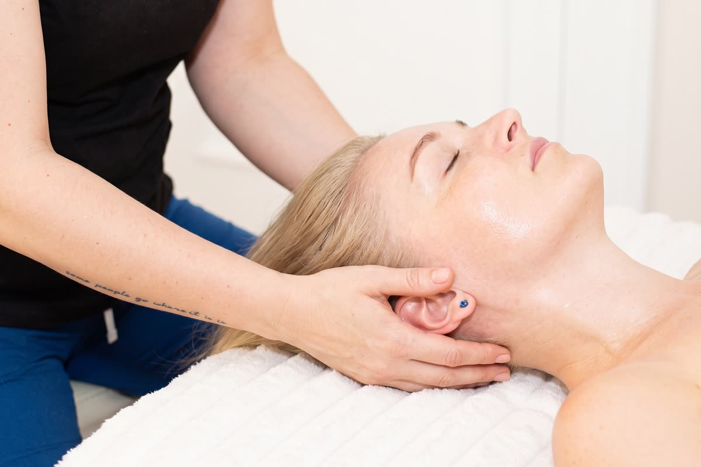
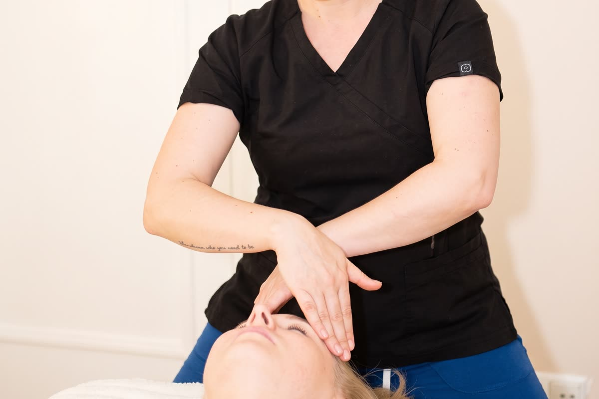

Pielęgnacja · 7 min czytania
Zaciskasz zęby? Dlaczego kobiety potrzebują masażu twarzy

Często zaciskasz zęby? Czujesz napięcie w żuchwie albo skroniach, a pod koniec dnia masz wrażenie, że twarz jest zmęczona, choć przecież nic nie robiła? To nie przypadek. Twarz jest jednym z miejsc, w których ciało najchętniej odkłada napięcie - i jednym z tych, o które najrzadziej dbamy inaczej niż kremem. Poniżej wyjaśniamy, skąd bierze się napięcie żuchwy i skroni, dlaczego częściej dotyczy kobiet i kiedy masaż twarzy przestaje być tylko pielęgnacją.
Napięcie, którego nie widać w lustrze
Żwacz, czyli główny mięsień żucia, uchodzi za jeden z najsilniejszych mięśni w ciele w stosunku do swojej wielkości. Kiedy jesteśmy skupieni, zestresowani albo długo patrzymy w ekran, wiele osób nieświadomie dociska zęby - i ten mięsień pracuje godzinami, choć niczego nie gryzie.
Prosty test: zęby w spoczynku nie powinny się stykać. Jeśli teraz, czytając ten tekst, masz je zaciśnięte, właśnie złapałaś ten nawyk na gorącym uczynku.
Sygnały, że Twoja twarz trzyma napięcie:
- Łapiesz się na zaciskaniu zębów przy komputerze, w samochodzie albo przed snem.
- Rano czujesz zmęczoną lub obolałą żuchwę.
- Bolą Cię skronie albo czujesz ucisk jak opaskę wokół głowy.
- W stawie przy uchu coś przeskakuje lub klika przy otwieraniu ust.
- Dolna część twarzy wydaje się szersza, bardziej „kwadratowa”.
- Marszczysz czoło albo ściągasz brwi, nawet gdy nic Cię nie martwi.
- Napięty kark ciągnie się aż do podstawy czaszki.
Dlaczego to częściej dotyczy kobiet
Zaburzenia stawu skroniowo-żuchwowego - czyli ból, napięcie i dysfunkcja w okolicy żuchwy - diagnozuje się u kobiet wyraźnie częściej niż u mężczyzn. To jedna z najbardziej powtarzalnych obserwacji w badaniach nad tym problemem. Wśród możliwych przyczyn wymienia się między innymi wpływ hormonów na odczuwanie bólu, ale mechanizm wciąż jest badany i żadne pojedyncze wyjaśnienie nie tłumaczy wszystkiego.
Z perspektywy gabinetu ważniejsze jest co innego: napięcie twarzy rzadko kończy się na twarzy. Napięty kark, mięsień mostkowo-obojczykowo-sutkowy i mięśnie podpotyliczne ciągną rysy w dół, a zaciśnięta żuchwa często idzie w parze z bólem głowy. Dlatego dobrze poprowadzony masaż twarzy prawie zawsze obejmuje też szyję i kark.
Jeśli korzystasz z makijażu permanentnego albo zabiegów medycyny estetycznej, zasady karencji przed masażem opisaliśmy w przewodniku rodzaje masażu twarzy.
Co masaż twarzy robi z tym napięciem
Krem nie dociera do mięśni. Masaż - tak, ale nie każdy w ten sam sposób. Przy napięciu żuchwy i skroni liczą się trzy rodzaje pracy.
Praca mioplastyczna
Wolna, ukierunkowana praca na mięśniach mimicznych i żucia oraz na powięzi, z uchwytami bliższymi fizjoterapii niż zabiegowi kosmetycznemu. Rozluźnia żwacze i skronie z zewnątrz, punkt po punkcie.
Praca od wewnątrz jamy ustnej
Głębszych partii żwacza i mięśnia skrzydłowego nie da się dosięgnąć z zewnątrz. Dlatego w masażu transbukalnym część pracy prowadzimy w rękawiczce od wewnątrz jamy ustnej. To najbardziej odczuwalna technika pracy na twarzy i jednocześnie ta, która najwięcej daje przy napięciu stawu skroniowo-żuchwowego.
Kark i podstawa czaszki
Napięta żuchwa i spięty kark to często jeden problem. Rozluźnienie karku i mięśni u podstawy czaszki zmienia to, jak układa się głowa i jak mocno twarz jest ciągnięta w dół.

Tak wygląda krótki fragment zewnętrznej części zabiegu:
Który zabieg wybrać
| Z czym przychodzisz | Zabieg | Czas i cena |
|---|---|---|
| Zaciskanie zębów, bruksizm, napięty staw skroniowo-żuchwowy | Masaż transbukalny | 40 min · 120 zł |
| Napięta żuchwa i napięta mimika jednocześnie | Mioplastyczny + transbukalny | 60 min · 180 zł |
| Ból głowy ciągnący od karku, spięty kark | Karku + mioplastyczny twarzy | 90 min · 250 zł |
| Owal twarzy, nawykowe napięcia mimiczne | Autorski masaż skulpturalny | 80 min · 250 zł |
| Zmęczone rysy, napięcie mimiczne, pierwsze zmarszczki | Masaż Kobido | 60 lub 75 min · od 180 zł |
Nie musisz wiedzieć, który zabieg wybrać. Każdą wizytę zaczynamy od rozmowy i dobieramy technikę do tego, co dzieje się z Twoją twarzą - a nie do nazwy zabiegu, którą gdzieś usłyszałaś.

Kiedy najpierw do stomatologa lub lekarza
Masaż rozluźnia mięśnie, ale nie leczy przyczyny każdego problemu z żuchwą. Zanim umówisz wizytę, skonsultuj się ze specjalistą, jeśli:
- Żuchwa się blokuje albo nie możesz swobodnie otworzyć ust.
- Ból jest silny, narasta albo pojawił się po urazie.
- Zgrzytasz zębami w nocy i widzisz, że się ścierają - stomatolog oceni, czy potrzebna jest szyna.
- Jesteś w trakcie leczenia ortodontycznego lub stomatologicznego i myślisz o masażu transbukalnym.
- Masz za sobą toksynę botulinową, wypełniacze lub inne zabiegi medycyny estetycznej - obowiązuje karencja wyznaczona przez lekarza.
Zabiegu nie wykonujemy przy gorączce i infekcji, aktywnej opryszczce, stanach zapalnych skóry twarzy, świeżych urazach ani przy zaburzeniach krzepnięcia. Pełną listę przeciwwskazań znajdziesz w przewodniku po rodzajach masażu twarzy.
Jak często i czego się spodziewać
Po jednej wizycie żuchwa i skronie są rozluźnione, a twarz wygląda na wypoczętą. Przez kilka godzin bywa lekko zaczerwieniona - to normalne po głębszej pracy. Trwalsza zmiana wymaga serii: zwykle proponuje się zabiegi co 7–14 dni, a potem wizyty podtrzymujące co 3–4 tygodnie. Masaż transbukalny to mocniejszy bodziec, więc jego rytm ustalamy indywidualnie.
Co możesz zrobić sama między wizytami
- Sprawdzaj, czy zęby się stykają. W spoczynku usta mogą być zamknięte, ale zęby lekko rozchylone.
- Rób przerwy od ekranu. Zwróć uwagę, czy nie wysuwasz głowy do przodu - to obciąża kark, a napięcie z karku przenosi się na twarz.
- Nie masuj twarzy mocno i codziennie na własną rękę. Tkanka potrzebuje przerwy między bodźcami, a przy skórze naczyniowej nadgorliwość zwykle kończy się podrażnieniem.
- Pij wodę i wysypiaj się. To, co dzieje się między wizytami, decyduje o tym, jak długo utrzyma się efekt.
Masaż twarzy w Poznaniu
Nasze studio działa na poznańskich Jeżycach, przy ul. Zeylanda 3/1. Przy napięciu żuchwy i skroni możesz wybrać masaż transbukalny, jego połączenie z pracą zewnętrzną w zabiegu mioplastyczny + transbukalny, masaż karku z mioplastycznym twarzy albo autorski masaż skulpturalny. Czasy trwania i ceny znajdziesz w cenniku.
Najczęstsze pytania
Czy masaż twarzy pomaga na zaciskanie zębów?
Rozluźnia mięśnie, które zaciskają zęby, w tym te niedostępne z zewnątrz - przy pracy transbukalnej od wewnątrz jamy ustnej. Nie usuwa jednak przyczyny nawyku. Przy nocnym zgrzytaniu zębami warto równolegle skonsultować się ze stomatologiem.
Dlaczego napięcie żuchwy częściej dotyczy kobiet?
Zaburzenia stawu skroniowo-żuchwowego diagnozuje się u kobiet wyraźnie częściej niż u mężczyzn. Wśród możliwych przyczyn wymienia się między innymi wpływ hormonów na odczuwanie bólu, ale mechanizm wciąż jest badany.
Który masaż twarzy wybrać przy bólu skroni?
Jeśli ból skroni idzie w parze z zaciskaniem zębów, najwięcej daje praca na mięśniach żucia - masaż transbukalny albo jego połączenie z pracą mioplastyczną. Jeśli ból ciągnie od karku, lepszy będzie masaż karku z mioplastycznym twarzy.
Czy masaż transbukalny boli?
To najbardziej odczuwalna z technik pracy na twarzy, zwłaszcza przy mocno napiętych żwaczach, ale nie powinien być bolesny. Nacisk dobieramy do Ciebie i zmieniamy go na Twój sygnał.
Ile zabiegów potrzeba?
Po jednej wizycie napięcie spada, ale trwalsza zmiana wymaga serii - zwykle zabiegów co 7–14 dni, a potem wizyt podtrzymujących co 3–4 tygodnie. Rytm masażu transbukalnego ustalamy indywidualnie.
Ten tekst ma charakter informacyjny i nie zastępuje porady lekarza, stomatologa ani fizjoterapeuty. Jeśli ból żuchwy jest silny, narasta albo towarzyszy mu blokowanie się stawu, najpierw skonsultuj się ze specjalistą.